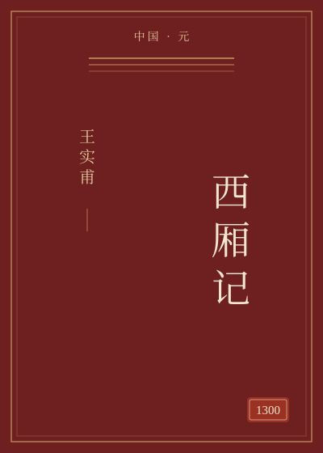
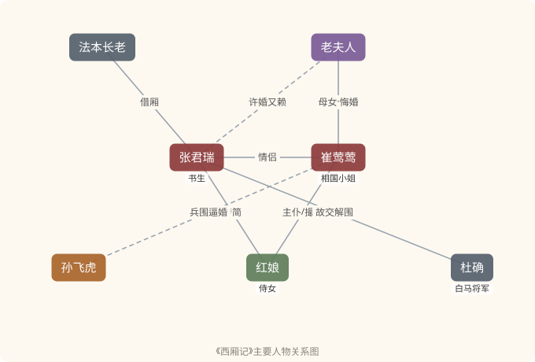

西厢记
一、基本信息
| 作者 | 王实甫 |
|---|---|
| 成书/出版 | 元代（约1300年前后，无定论） Wang Shifu — Encyclopaedia Britannica（百科全书） |
| 国别/地区 | 中国 |
| 时代 | 古代 · 元 |
| 体裁 | 杂剧（扩大体制，五本连演） |
| 语言 | 汉语（曲词典雅，宾语生动） |

《西厢记》主要人物关系图（人物关系图）
二、创作背景
《西厢记》的故事有清晰的传承链：唐元稹传奇《莺莺传》（始乱终弃的悲剧）→ 金代董解元《西厢记诸宫调》（'董西厢'，改为大团圆并扩充篇幅）→ 王实甫《西厢记》（'王西厢'，戏剧化完成）。Britannica 称其为'扩大的杂剧'（an amplified zaju），篇幅数倍于普通杂剧。
元代城市戏曲市场繁荣，大都、平阳等地书会才人为职业戏班供剧；Britannica 记王实甫为'元代最杰出剧作家'，且指出《西厢记》的创新之一是让所有重要人物都能唱，突破了杂剧一人主唱的惯例。
此剧在明清两代既是流行读物又被屡屡禁毁；金圣叹评点本（'第六才子书'）盛行于清代（本页转述通说，待核）。
三、内容脉络
第一本（佛寺奇逢）：书生张君瑞赴京赶考，游普救寺偶遇相国小姐崔莺莺，一见倾心，借住西厢；红娘往来传话，'惊艳'一折是戏曲史上最著名的登场之一。
第二、三本（月下听琴·传书赖简）：孙飞虎兵围普救寺欲掳莺莺，老夫人许婚退兵；张生请故人杜确解围后，老夫人悔婚赖简，令二人以兄妹相称。张生害相思，红娘穿针引线递简传情，莺莺'待月西厢下'却临阵翻悔，张生一病几殆。
第四本（酬简拷红）：莺莺终以身相许；老夫人察觉，拷问红娘——'拷红'一折红娘反客为主，以理服人迫使老夫人允婚，但逼张生立刻赴京应试，'得官呵，来见我；驳落呵，休来见我'。
第五本（长亭送别·衣锦团圆）：长亭送别'碧云天，黄花地'唱段为曲词绝唱；张生中状元归来，与莺莺完婚，'愿普天下有情的都成了眷属'终场。
四、主要人物表
| 人物 | 身份 | 说明 |
|---|---|---|
| 崔莺莺 | 相国小姐 | 深情而矜持，在礼教与爱情间反复挣扎的'假意儿' |
| 张君瑞（张生） | 书生 | 痴情而近于迂气的追求者 |
| 红娘 | 莺莺的侍女 | 全剧最灵动的人物：机敏泼辣、以退为进——Britannica 称其虽出自套式却'写得可信' |
| 老夫人 | 莺莺之母 | 门第与礼法的化身，两次悔婚制造全剧波澜 |
| 法本、惠明等 | 普救寺僧 | 惠明'不念法华经'的豪侠和尚为喜剧色彩添彩 |
五、主题与艺术特点
- 愿天下有情人终成眷属：终场曲词（'愿普天下有情的都成了眷属'）直接宣示主题，在中国戏曲中罕见的正面宣言（原句属剧本文本，公有领域；字句以通行本为准待核）。
- 情与礼的拉锯：'赖简'一场写莺莺在'假意儿'与真心间的反复，是中国文学中对少女心理最细腻的刻画之一。
- 侍女的胜利：'拷红'以红娘的反客为主完成矛盾解决——仆婢成为道德与智慧的担当者，倒转主奴关系。
- 艺术特点：曲词'花间美人'式的典雅（朱权评语，转述待核）、长篇结构层层设障再一一化解，五本连演的史诗化布局。
六、影响与评论
- Britannica：'被广泛视为这一时期最好的北杂剧'，其体制创新（人人可唱、篇幅倍增）为明清传奇体的形成开辟道路。
Wang Shifu — Encyclopaedia Britannica（百科全书） - Britannica：王实甫署名剧作十四种仅存三种，而《西厢记》使其名垂文学史；红娘形象的成功塑造是其代表性成就之一。
Wang Shifu — Encyclopaedia Britannica（百科全书） - 对后世爱情书写的影响：汤显祖《牡丹亭》、《红楼梦》中宝黛共读《西厢》的场景，皆把它当作'情'的经典文本（本条为文学史通行概括，具体引证待核）。
Wang Shifu — Encyclopaedia Britannica（百科全书） - 《长亭送别》'碧云天，黄花地，西风紧，北雁南飞'被历代曲话推为写景抒情的绝唱（本条为通行评价，原文待核）。
Wang Shifu — Encyclopaedia Britannica（百科全书）
七、阅读建议
难点
- 五本二十一折的长体制打破'四折'惯例，读前须知其连演性质。
- 曲词典雅（大量化用唐诗宋词），注释不可缺；宾语则近口语，一雅一俗相映成趣。
- 与《莺莺传》对照读，才能体会从'始乱终弃'到'有情人终成眷属'的价值翻转。
- 王季思校注《西厢记》（上海古籍出版社）：通行校注本，注释精审。
- 金圣叹评本《第六才子书西厢记》：明清评点传统名本，兼有批评史价值。
- 张燕瑾校注本（人民文学出版社）可作另一选择。
先读《惊艳》《闹简》《赖简》《拷红》《长亭送别》五个名折 → 通读全本 → 再对照董解元诸宫调看故事流变，最后读《莺莺传》原典。
八、待核实
- 成书年代无定论，本页取约1300年前后为示意（year_sort）。
- 五本二十一折的通行本结构出自明刊本系统，与早期刊本（弘治本等）卷出分合略有出入，待核。
- '愿普天下有情的都成了眷属'曲句的文字以通行校注本为准，本页转述。
- 金圣叹评点系年（顺治年间）与'第六才子书'名目待核。
本页主要来源
王实甫的其他收录作品：西厢记